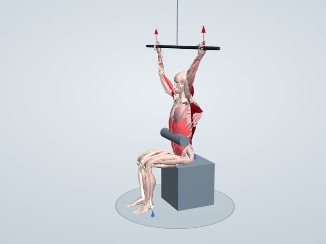

トレーニング図鑑
ラットプルダウン
頭上のバーを胸の前へ引き下ろす種目です。懸垂と同じく背中(広背筋・大円筋)を鍛えられ、重さを調整しやすいのが特徴です。
一般に鍛えられる筋: 広背筋・大円筋・上腕二頭筋

鍛えられる筋のしくみ
マシンのバーを胸の前へ引き下ろす動きで、広背筋が主に働きます。広背筋は腰から脇の下へ広がる大きな筋で、腕を下へ引く働きがあります。大円筋も同じ向きに働き、肘を曲げるために上腕二頭筋、肩甲骨を寄せて下げるために菱形筋や僧帽筋も使います。懸垂と同じ動きを、重さを調整しながら練習できます。
働く筋(3Dモデルでの計算)
重り35kgで、体重60kgの人がゆっくり動かしたときに、それぞれの筋が出せる最大の力に対して何%の力を出すかの推定です。
- 広背筋縮みながら100%
- 上腕筋縮みながら100%
- 上腕二頭筋 長頭縮みながら88%
- 大円筋縮みながら75%
- 腕橈骨筋縮みながら61%
- 肘筋伸びながら57%
- 上腕二頭筋 短頭縮みながら57%
- 上腕三頭筋 長頭伸びながら41%
「縮みながら」は持ち上げるときに縮んで力を出す筋、「伸びながら」は伸ばされながら力を出す筋、「長さを保って」は姿勢を支える筋です。バーは筋力の50%でいっぱいになります。
やり方
- マシンに座り、太ももをパッドで固定する
- バーを肩幅より広く握る
- 胸を張り、バーを鎖骨のあたりまで引き下ろす
- ゆっくり腕を伸ばして戻す
ポイント
- 肘を体の横に下ろすイメージで引く
- 上体を大きく後ろに倒さない
よくある間違い
- 腕の力だけで引く
- 首の後ろに引いて肩を痛める
回数と重さの目安
10〜12回で限界がくる重さで、2〜3セット。
やさしくする方法
重さを軽くする。マシンがなければ、ゴムチューブを高いところにかけて引く。
きつくする方法
引いたところで1秒止める。戻すときに3秒かける。
注意すること
バーを首の後ろへ引くと肩を痛めやすいので、胸の前へ引きます。上体を大きく後ろへ倒して反動を使わないようにします。
同じ部位の種目
学習用の推定です。筋の働きは体格ややり方で変わり、実際の筋電図とは異なることがあります。痛みがあるときは無理をせず、専門家に相談してください。